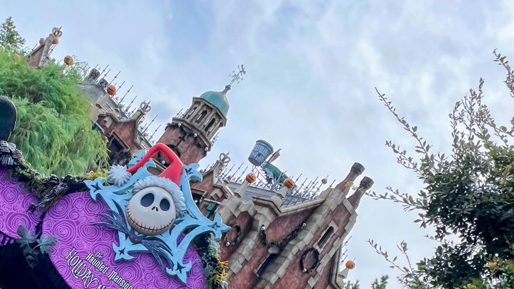

Haunted Mansion
千人目を待つ館 — 999人の亡霊と、墓石に刻まれた物語
ファンタジーランドの一角に、赤レンガの古い洋館が建っています。尖った屋根と重厚な石飾り、そして鉄の門の向こうに広がる墓地。ここは、999人の亡霊が暮らすホーンテッドマンションです。
館の住人たちは、歌を楽しみ、夜ごと舞踏会を開き、訪問者にいたずらを仕掛けながら暮らしています。しかし、彼らの多くは、かつて私たちと同じように生きていた人々でした。
庭の墓石には不可解な死が記され、肖像画には生前の姿が残されています。古い記録には、館で交わされた約束や、いまだ解けない呪いについても書かれています。
そして、この館には、まだひとつだけ空きがあります。
千人目の住人を迎えるための場所です。

I. 千人目を待つ館
童話の城や色鮮やかな建物が並ぶファンタジーランド。その一角に、赤レンガの壁と尖塔を持つ洋館が建っています。隣のウエスタンランドからもほど近いこの場所には、周囲とは異なる時代の趣が残されています。
館の屋根には、コウモリの姿をかたどった風見鶏が据えられています。柱や飾り金具にも同じ生き物の姿が見つかります。館に仕える女性たちの髪飾りにまでコウモリがあしらわれているところを見ると、この屋敷では特別な存在なのでしょう。
館の入口にある柱時計には、待ち時間が短いときだけ、不吉な数字「13」が現れることがあります。訪問者には恐ろしい数字でも、亡霊たちには歓迎のしるしなのでしょう。
館の主はゴーストホスト。姿を見せることなく客人を案内する彼は、999人の亡霊たちが待ち望む最後の仲間についても、よく知っています。
もっとも、この館を訪れる者が必ずしも永住を望んでいるとは限りません。ゴーストホストはそのことを承知しているのか、していないのか。今日も新しい訪問者を迎え入れます。
II. 九つの命を持った猫 — フラッフィーの墓
館の庭には、人間だけでなく動物たちの墓地もあります。そこに眠るのは、かつてこの土地で暮らしていた犬や猫、アヒル、ブタ、リスなどです。
なかでも不思議なのが、フラッフィーという猫の墓です。
その墓石には、一匹の猫の名の下に、いくつもの日付が刻まれています。
最初の日付は1849年6月18日。ところが、そのわずか43日後にあたる7月31日にも、フラッフィーの命日が記されています。さらに1850年11月14日、1851年2月2日と、日付は続きます。
そして、1851年2月3日。
前日に亡くなったばかりのフラッフィーは、翌日にも命を落としているのです。
墓石に記された命日は、1849年から1868年にかけて全部で九つ。最初と最後の日付には、19年もの隔たりがあります。
英語圏には、猫には九つの命があるという古い言い伝えがあります。危険な目に遭っても不思議と生き延びる猫の生命力を表した言葉です。
フラッフィーの墓石は、この言い伝えを思わせます。死を迎えるたびに命を取り戻し、何事もなかったように屋敷へ帰ってきたのでしょうか。
それとも、同じ名前を受け継いだ猫が何匹もいたのでしょうか。
墓石はその答えを語りません。しかし、最後の日付が1868年7月28日であることだけが残されています。
九つの命を使い果たしたフラッフィーは、ようやく永い眠りについたのかもしれません。
III. 動物たちの墓碑銘 — 笑えない最期の物語
フラッフィーの周囲にある墓石にも、動物たちの奇妙な生涯が刻まれています。
アヒルのスキマーは、近所の家を訪ねたことが災いしたようです。墓碑には、夕食前に隣家を訪問するべきではなかったという意味の言葉が残されています。
問題は、誰の夕食だったのかということです。
スキマーは食卓へ招かれたのでしょうか。それとも、夕食の献立に加えられてしまったのでしょうか。墓碑はそこまで教えてくれません。
リスのバズも、慎重な行動が裏目に出たようです。
彼は猫がいるかどうかを確かめようとして立ち止まりました。そして、そこには本当に猫がいたのです。
バズが亡くなったのは1859年7月17日。猫を警戒したばかりに、その存在を確かめてしまったという皮肉な話です。
この猫がフラッフィーだったかどうかは、墓碑からはわかりません。しかし、フラッフィーの最後の命日は1868年ですから、二匹が同じ時代に暮らしていた可能性は残されています。
ブタのロージーの墓には、1849年という年号とともに、ようやく「Hog Heaven」にたどり着いたという言葉が刻まれています。
Hog Heavenは、英語ではこの上なく幸せな状態を意味する表現ですが、文字どおりに読めば「ブタの天国」です。その言葉がブタの墓石に刻まれているのは、いかにもこの館らしい冗談です。
カエルのフライベイトの墓石には、「He Croaked」とあります。カエルが鳴いたという意味にも、彼は死んだという意味にも読める言葉です。
そして、犬のディガー。
その墓石には、骨を埋めた場所がようやくわかったという言葉があります。ディガーという名には、穴を掘る者という意味があります。生前、骨を隠すのが好きだった犬なのでしょう。
墓地を見渡すと、彼の墓は別の墓石と鎖でつながっています。その先に眠るのは、ミスター・ウエストという人物です。
一人と一匹がどのような関係だったかは明らかではありません。しかし、死後も墓石のそばに犬をつないでおくほど、深い縁があったのでしょうか。
悲しい別れを記すはずの墓石に、皮肉や言葉遊びが並んでいるのは奇妙なことです。
この庭では、死さえも、少しばかり笑いを交えて語られています。
IV. 墓石の下で眠れない人々
動物たちの墓地から目を移すと、人間の墓碑にも風変わりな言葉が残されています。
ミスター・ウエストの墓には、喪に服さないでほしいという本人の願いが刻まれています。葬儀の悲しみを好まなかったのか、それとも自分の死を嘆く必要がないと考えていたのか。彼がどのような人物だったのかは、短い碑文から想像するほかありません。
フレッドという人物の最期は、もう少し具体的です。
彼の墓碑によれば、頭の上に大きな岩が落ちてきたことが死因でした。なぜそのような事故が起きたのかは記されていません。親しみやすい名前と、あまりにも不運な死因が同じ墓石に並んでいます。
館の敷地には、土が盛り上がり、つい最近になって誰かを埋葬したかのように見える場所もあります。
しかし、ここはすでに999人の亡霊が暮らす屋敷です。
墓が増えたとしても、それが住人との永遠の別れを意味するとは限りません。むしろ、墓石の下で眠っていた者が、そのまま館の新しい住人になっている可能性もあるでしょう。
静かな墓地と、夜ごと騒がしい館内。
この二つの場所は、生と死によって分けられているようでいて、どこかでつながっています。
V. 肖像画に残された生前の姿
館の内部には、古い肖像画がいくつも飾られています。描かれている人物たちは、いずれも立派な衣装をまとい、堂々とした表情を見せています。
しかし、その肖像画には、最初からすべてが描かれているわけではありません。
伸びる部屋の壁に掛けられた絵には、傘を手にした若い女性がいます。彼女の名はサリー・スレーター。
生前のサリーは、人当たりのよい、人気の綱渡り師でした。バレエシューズを履いて危険な綱渡りに挑み、その腕前で観客を魅了していました。
ところが、ある公演で彼女はバランスを失い、命を落としてしまいました。
館に飾られた肖像画には、その危険な綱渡りの光景が残されています。額縁の下に隠れていた部分が現れると、サリーの足元には、口を開けたワニが待ち構えています。
彼女が生前にどれほど大胆な芸を披露していたかがわかる一枚です。
もっとも、亡霊になったサリーは、悲劇の記憶に沈んでいるわけではありません。明るく面倒見のよい性格は変わらず、館でも人々を楽しませようとしています。
もう一人、ホワイエに飾られた肖像画の紳士にも、不思議な生涯があるようです。
その人物は、絵の中で若者から老人へと変わり、最後には骸骨の姿になります。亡霊たちの間では「枯れゆく紳士」と呼ぶ者もいます。
彼は自らの過去を語ろうとしません。名も来歴も謎に包まれていますが、規則正しい生活を好み、毎日一分も違わない時刻に紅茶を楽しむことで知られています。
あまりに正確なため、彼の紅茶の時間を時計代わりにしている亡霊までいるほどです。
ほかの住人たちが秘密を聞き出そうとしても、紳士は手にしたステッキで床を二度突き、丁寧に会釈して立ち去ってしまいます。
肖像画は彼の年齢を変えてみせますが、生前の名前や人生までは教えてくれません。
VI. ゴーストレジストリー — 失われた八枚の記録
館のライブラリーには、古くから大切に受け継がれてきた一冊の本があります。2023年、この本をめぐって、使用人と亡霊たちの間に思いがけない騒動が起こりました。
その名は「ゴーストレジストリー」。
館で暮らす亡霊たちについて記した記録簿です。
名前、生前の職業、性格、住人たちの間で語り継がれる噂。代々この館に仕えてきた者たちは、亡霊たちの様子を観察し、少しずつ書き残してきました。
しかし、この本に記されたことが、すべての真実であるとは限りません。人づてに語られた話もあれば、住人自身が隠している秘密もあります。
その記録を預かっていたのが、館に仕える女性、Z.J.でした。
Z.J.は、代々この屋敷に仕える者たちの仕事を、いずれ引き継いでいく立場にあります。夜会が始まるときには、コウモリの飾りがついたベルを鳴らす役目も担っています。
ある日、彼女はゴーストレジストリーを落としてしまいました。衝撃で本から八枚のページが飛び出し、行方がわからなくなりました。
しかも、ページはただ風に飛ばされたわけではありません。自分の過去が書かれたページを、亡霊たちが持ち去ってしまったのです。
枯れゆく紳士は、自らの秘密を知られたくありません。
サリー・スレーターは、自分のページを使って新たな公演の宣伝をしようと考えていました。
ほかの亡霊たちにも、それぞれページを持ち去る理由がありました。
代々守られてきた一冊の本は、亡霊たちが死後も生前の記憶を大切にし、ときには隠そうとしていることを明らかにしたのです。
VII. ザビエルに迫る死の呪い
Z.J.には、同じく館に仕える父親がいます。
名はザビエル。長年にわたって屋敷を支えてきた執事です。
ザビエルは仕事に厳格で、館の務めを効率よく果たすために懐中時計を携えています。一方、娘のZ.J.にも、家族が守ってきた務めを受け継ぐことが期待されています。
親子にとって、この屋敷は単なる勤め先ではありません。代々の記録を守り、亡霊たちの暮らしを支えていく場所でもあります。
翌2024年、ザビエルに「死の呪い」がかけられていることが判明しました。
異変に気づくきっかけとなったのは、ワタリガラスのレイブンがもたらした知らせでした。
館では、ゴーストレジストリーをめぐる騒動が再び動き始めます。Z.J.は父親に迫る運命を変えるため、古い記録や館に残された手がかりを探すことになります。
死者たちが暮らす屋敷で、生きている者に死の呪いが迫る。
皮肉にも思える出来事ですが、ここでは生者と亡霊が同じ場所で時間を重ねています。
亡霊たちの過去を調べることは、やがて生きている者の運命を知ることにもつながっていくのでした。
VIII. 終わらない舞踏会と、帰る場所を見つけた亡霊たち
館のグランドホールでは、夜ごと華やかな舞踏会が開かれています。
その始まりに深く関わるのが、霊媒師マダム・レオタです。水晶玉の中から亡霊たちを呼び寄せる彼女の声に応じるように、広間には次々と住人が現れます。
オルガンを演奏しているのは、ヴィクトル・ガイスト。奏でられる音楽に合わせ、食卓を囲む者、空中を舞う者、ワルツを踊る者たちが集まっています。
踊り手の中には、マリリン・オハラとハーランドの姿もあります。
マリリンは、日本出身の芸能人を両親に持つ女性でした。才能を生かしてハリウッドで成功することを夢見ていましたが、当時の社会は彼女にとって決して生きやすいものではありませんでした。
彼女は芸名を使い、映画の世界で活躍することを目指しました。しかし、時代物の映画の撮影中に不幸な事故に遭い、その夢は果たされないまま終わりました。
一方、ハーランドは将来を期待された画家でした。アメリカで風景画を描いていた彼は、自由を求めてヨーロッパへ向かいました。
その旅路の途中、船の事故によって命を落としてしまいました。
故郷には、彼が愛していた男性が残されていました。二人は離れて暮らしていても、同じ星空を見上げて互いを思うことを約束していました。
ハーランドが身につけている星のブローチには、その約束の記憶が残っています。
マリリンとハーランドは、生前には互いを知りませんでした。異なる場所で、それぞれの夢を追いながら人生を終えた二人です。
しかし、亡霊となってこの館で出会い、芸術への思いや、生前には十分に理解されなかった気持ちを分かち合うようになりました。
二人は恋人同士ではありません。それでも、深い信頼で結ばれた舞踏会のパートナーです。
グランドホールで踊る亡霊たちのなかには、このように、生前には出会えなかった仲間を死後に見つけた者もいます。
館の夜会が終わることなく続いているのは、住人たちが今もここで新しい時間を重ねているからなのでしょう。
IX. 屋根裏部屋の花嫁 — コンスタンスと五人の夫
華やかな舞踏会が開かれる広間の上には、婚礼の面影を残す屋根裏部屋があります。古びた荷物の向こうに佇むのは、花嫁姿の亡霊です。
彼女の名はコンスタンス。
強い野望を秘めた美しい花嫁として知られ、首元には真珠のネックレスが光っています。花束とろうそくを携えた彼女の胸では、赤い心臓が規則正しく明滅し、その鼓動が部屋に響きます。
この花嫁には、海の向こうの館にも恐ろしい来歴が残されています。
そこで語られているのは、財産を持つ男性たちとの五度の結婚です。夫たちは次々と不幸な最期を迎え、コンスタンスの首には、婚礼のたびに贈られた真珠のネックレスが重なっていきました。屋根裏に並ぶ夫たちの肖像画と、彼女の手に現れる斧は、幸福な結婚式の裏に隠された出来事を告げています。
しかし、こちらの屋根裏部屋に斧や夫たちの肖像画が並んでいるわけではありません。花束とろうそくを持ったコンスタンスが、鼓動を響かせながら立ち続けています。
生前のことを記したゴーストレジストリーを、彼女自身は快く思わなかったようです。2023年に散らばった記録のうち、自分の名が書かれたページを、ろうそくの火で燃やそうとしたこともありました。
死後もなお、明かされたくない過去があるのでしょう。屋根裏部屋では、花嫁の心臓だけが、それを知っているかのように脈打ち続けています。
X. 棺の中から助けを求める声
館の中には、住人たちが眠り続けているとは思えない場所がいくつもあります。
古い棺が置かれた部屋も、そのひとつです。
棺のふたが内側から持ち上がり、何者かが外へ出ようとしています。すでに亡くなった人物のために用意されたはずの棺ですが、その中にいる者は、おとなしく眠るつもりがないようです。
助けを求める声は、ふたの向こうから繰り返し響いてきます。
棺の中の人物が、どのような経緯で閉じ込められたのかはわかりません。誰かに封じられたのか、自ら入ったところで出られなくなったのか。それとも、自分が死んだことにまだ気づいていないのでしょうか。
この館では、墓石に名前が刻まれた者も、肖像画の中で生涯を終えた者も、静かに眠っているとは限りません。
ただし、棺から出ようとする人物と、館そのものから外へ出ようとする亡霊たちは、別の存在です。
後者の三人組には、それぞれ名前と、生前の物語が残されています。
XI. 館の外へ出たがる三人の亡霊
墓地の奥で待っている三人の亡霊は、ヒッチハイクゴーストと呼ばれています。
フィニアス、エズラ、ガス。
彼らは館を訪れる客人の乗り物に便乗し、外の世界へ出かけようとしています。
フィニアスは、生前、人々に怪しげな薬を売り歩いていた人物です。
親しみやすい態度で客の信用を得ながら、効き目の疑わしい薬を売りつける詐欺師でした。やがて新しい薬を作る実験の途中で命を落としてしまいました。
死後も、彼は商売道具のかばんを手放していません。亡霊となっても、誰かに薬を売る機会を探しているのかもしれません。
背の高いエズラは、放浪の生活を選んだ人物でした。
山高帽をかぶり、道行く人々から小銭を受け取って暮らしていましたが、ただの怠け者ではありませんでした。
ある日、帽子に小銭を入れてくれた子どもの頭上に、大きな物が落ちてきました。エズラはその子を守ろうとして、自ら命を落としたのです。
三人の中でも、彼の生涯には意外な勇敢さが残されています。
小柄なガスには、さらに不幸な過去があります。
彼は自分が犯していない罪によって罰せられ、長い時間を牢獄で過ごしました。それでも陽気さと純粋な心を失わず、死後も自由を愛する亡霊として暮らしています。
性格も過去も異なる三人ですが、館で出会って意気投合しました。
今ではそろって、訪問者と一緒に外へ遊びに出かける機会をうかがっています。
ドゥームバギーが出口へ近づくと、三人は道端で待ち構えています。そして、客人が鏡の前を通りかかったとき、いつの間にか隣に座っているのです。
ここで思い出されるのが、館の入口で語られる千人目の住人の話です。
館の亡霊たちは、新しい仲間を迎えたがっています。
ところが、ヒッチハイクゴーストの三人は、むしろ自分たちが館の外へ出ることを望んでいます。
死者の仲間入りを求める屋敷と、生者の世界へ出かけたがる亡霊たち。
両者の思惑が、最後の鏡の前で交差するのです。
XII. ハロウィーン・タウンからの客人
秋が深まり、冬の訪れが近づくころ、ホーンテッドマンションには別の世界から客人がやって来ます。
ハロウィーン・タウンのジャック・スケリントンです。
ハロウィーンの王であるジャックは、クリスマスの魅力に心を奪われ、自らサンタクロースになろうとしました。
彼が館に持ち込むクリスマスは、普通のものとは大きく異なります。
カボチャや頭蓋骨で飾られたツリー、不気味な贈り物、奇妙な装飾。そこにはハロウィーン・タウンの住人たちなりの祝福が込められています。
ジャックの仲間である人形のサリーや、幽霊犬のゼロも館を訪れ、999人の亡霊たちとともに特別な季節を過ごします。
このとき、屋敷の住人たちは普段の暮らしを失うわけではありません。もともと恐怖と笑いを好む彼らにとって、ジャックが届ける奇妙なクリスマスは、むしろ歓迎すべき贈り物なのかもしれません。
季節が終わると、館は再び元の姿へ戻ります。
しかし、あの風変わりなクリスマスを経験した亡霊たちの記憶まで消えるわけではないでしょう。
XIII. 恐怖と笑いが同居する館の誕生
ホーンテッドマンションの歴史をさかのぼると、その原点は1950年代のディズニーランドにあります。
1957年、ウォルト・ディズニーはイマジニアのケン・アンダーソンに、幽霊屋敷の構想を具体化する役目を託しました。
しかし、どのような幽霊屋敷を作るべきなのか、答えはひとつではありませんでした。
恐怖を中心に据えた、不気味な館。
それとも、幽霊たちの奇妙な行動を笑いながら楽しめる館。
イマジニアたちの構想には、その両方が存在しました。
最終的に誕生したホーンテッドマンションは、恐怖とユーモアをひとつの体験にまとめたものでした。
静かな廊下には不吉な音が漏れ聞こえ、誰もいない部屋で物が動きます。しかし、館の奥へ進むにつれて、亡霊たちは姿を現し、最後には墓地で陽気な歌声を響かせます。
その音楽の中心にあるのが、「グリム・グリニング・ゴースト」です。
作曲を担当したバディ・ベイカーと、作詞を手がけたX・アテンシオによって生み出されたこの曲は、館の中でさまざまな姿に変わります。
ある場所では重々しく、ある場所では優雅なワルツとして、そして墓地では陽気な合唱として響きます。
ひとつの旋律が、館の住人たちの異なる表情を結びつけています。
1969年8月9日、カリフォルニアのディズニーランドに最初のホーンテッドマンションが開きました。その後、1971年にはフロリダにも館が誕生しました。
東京ディズニーランドでは、フロリダの館に近いゴシック様式の外観が受け継がれました。
さらに、パリにはレイブンズウッド家の悲劇を描く「ファントム・マナー」があります。そこでは、鉱山町の歴史と一族の運命が深く結びついています。
香港の「ミスティック・マナー」は、また別の物語です。冒険家ヘンリー・ミスティック卿とサルのアルバートが暮らす館では、魔法の力によって収集品が動き出します。ミスティック卿は、東京ディズニーシーにもゆかりのある「探険家・冒険家学会（S.E.A.）」の一員です。
それぞれの館には、異なる建築と物語が息づいています。
そして、東京のファンタジーランドに戻れば、赤レンガの洋館は今日も変わらず客人を待っています。
庭には九つの命日を持つ猫の墓があり、肖像画には生前の秘密を隠す紳士がいます。広間では夢を追っていた者たちが踊り、屋根裏部屋には夫たちの記憶を残した花嫁が立っています。
出口には、外の世界へ出かけたがる三人の亡霊までいます。
この館に暮らす999人は、ただの恐ろしい亡霊たちではありません。それぞれが異なる人生を送り、死後もなお、自分らしく暮らし続けている住人たちなのです。
そして、その暮らしに加わる千人目の仲間は、まだ見つかっていません。
鉄の門の向こうでは、今夜も新しい客人の到着が待たれています。
参考資料
- 東京ディズニーリゾート「ホーンテッドマンション」（2026年11月24日閲覧）。
- 東京ディズニーリゾート・ブログ「アトラクションキャストが教える！見どころ紹介～「ホーンテッドマンション」編～」（2021年9月9日）。
- akkyのディズニー最新レポ「ホーンテッドマンション」（東京の外観・ペットの墓碑の写真と転記、2026年11月24日閲覧）。
- 梅酢ブログ「ホーンテッドマンションの並び列のお墓に隠された秘密を徹底的に紹介！」（東京の墓碑の写真と転記、2026年11月24日閲覧）。
- Dtimes「第一弾は『ホーンテッドマンション』！東京ディズニーリゾート スペシャルイベント『ディズニーストーリービヨンド』」（2023年1月17日）。
- ふわふじこ「ストーリービヨンド（第一弾）に出てくるホーンテッドマンションのキャラクターについてのまとめ ディズニー」（2023年企画の参加記録、2026年11月24日閲覧）。
- Dtimes「新たな亡霊も登場！東京ディズニーランド『ディズニーストーリービヨンド』第二弾 ホーンテッドマンション“託された運命編”まとめ」（2024年1月9日）。
- No Disney, No Life「ディズニーストーリービヨンドホーンテッドマンション～託された運命編～が2024年2月7日から開催!イベント内容まとめ」（2026年11月24日閲覧）。
- Disney Parks Blog, 13 Ghoulish Ghosts that Haunt the Haunted Mansion at Disneyland Park（2019年8月8日、当時のカリフォルニア版）。
- dpost.jp「DLR本家『ホーンテッドマンション』再開時に屋根裏シーンをアップデート」（2025年1月18日）。
- 東京ディズニーリゾート・ブログ「ゴーストとともに楽しくてにぎやかなホリデーパーティーはいかがですか？」（2017年12月7日）。
- Disney Parks Blog, Hauntingly Historic Mansion Celebrates 55 Years Next Week（2024年7月29日）。
- The Walt Disney Family Museum, Grim Grinning Ghosts: The Music of Walt Disney’s Haunted Mansion（2021年8月4日）。
- 東京ディズニーリゾート・ブログ「アトラクションキャストが教える！見どころ紹介～フォートレス・エクスプロレーション編～」（2022年5月24日）。